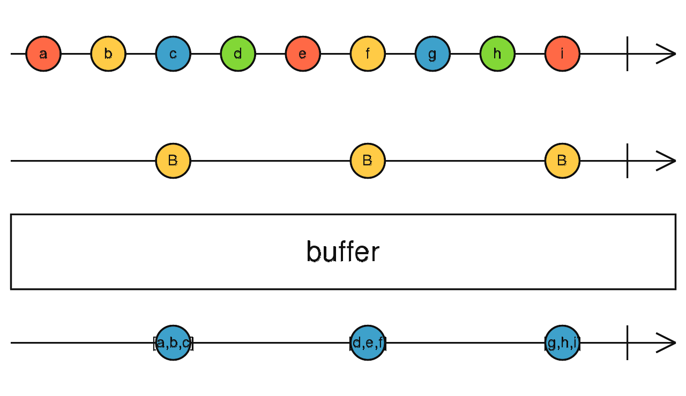

buffer
参数列表：
-
closingNotifier
Observable<any>
一个Observable，用于告诉source应该把当前已经缓存的值发出去。当Observable来值的时候，source被缓存的数据会被push出去
-
seed
T | R
(可选)accumulator的acc的初始值。
返回值: Observable <T[]>
珠宝图:

功能说明:
- buffer 会一直缓存source的值，一直到notifier有新的值发出，此时被缓存的值会以数组形式发出.
备注事项:
- buffer的数据即使没有发送完毕，如果source发出了complete，buffer也会complete
点击不同按钮查看不同demo 代码效果